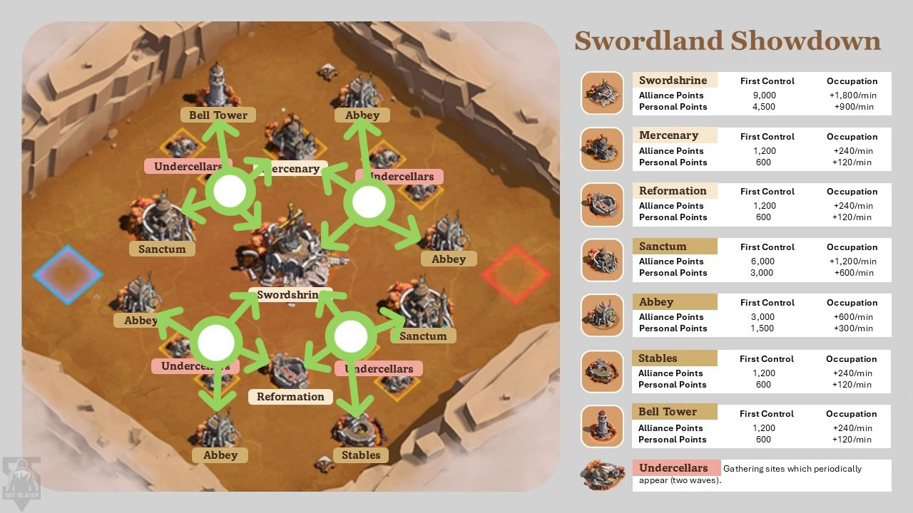

+
We are stronger
Take control early, hold the best point buildings, and protect the bank we build.
One-hour alliance battle plan
Twenty-five players. Named building owners. One attack call at a time. Pick the endgame from the score and the opponent's actual garrisons.
Operating rule
Each priority building has one named owner responsible for capture, garrison, refills, and any handoff. The mobile strike group adds force to the commander's chosen target. Hold until the next garrison is confirmed, unless command orders an evacuation with a destination and collection plan.
Opponent branches
Use the shared opening below. Once battle reports and garrisons show what each side can hold, the commander picks a branch and calls any change in target.
Take control early, hold the best point buildings, and protect the bank we build.
Protect two anchors, use one mobile strike, and flip the best banked target.
Avoid repeat losses to their best garrison. Farm reachable points and prepare one credible ambush.
Judge strength from live garrisons, reports, attendance, and refill speed, not the signup power label alone. Reassess at center unlock and with eight minutes left.
Twenty-five active players
| Assignment | Players | Opening job | When center opens |
|---|---|---|---|
| Sanctum A | 5 | Capture and hold assigned Sanctum. | Keep its defensive core. Lend spare marches only with owner approval. |
| Sanctum B | 5 | Capture and hold the other Sanctum. | Keep its defensive core. Lend spare marches only with owner approval. |
| Bell Tower | 3 | Capture the faster-occupation buff. | Lead the Hall of Reformation move; cover Bell with secondary marches if viable. |
| Royal Stables | 3 | Capture the faster-teleport buff. | Support a Swordshrine push and provide its named garrison leader. |
| Mobile strike | 5 | Help the called first-control race or contested building; rally if a solo hit cannot win. | Hit one commander-selected target, then refill or move to the next call. |
| Collection coordinators | 2 | Watch point drops and fill light support needs. | Assign collection sectors; call nearby players' spare marches to drops and Undercellars. |
| Commander + deputy | 2 | Track score, pins, attendance, and the enemy's strongest marches while sending assigned support marches. | Call target changes and cover a no-show or lost owner. |
Total: 25. These are player responsibilities, not one-march limits. On the map below, pin Sanctum A to the left Sanctum and Sanctum B to the right Sanctum. Four opening targets are assignments, not a commitment to hold all four against stronger opposition. If fewer than 25 arrive, keep two Sanctum owners, one rally leader, and one caller; merge Bell and Stables support duties first, then assign collection sectors to players with spare marches. Put any extra arrivals into the strike group or a building that needs refills.
Safe zone or forward town
The four white circles are useful staging zones: each is near several objectives. They are not four permanent camps for the whole roster. A town in the safe zone can still send marches to buildings, rallies, drops, and Undercellars. Teleport only when a shorter route changes a capture, refill, rally, or collection window.

| Hub on image | Nearby jobs | When to use it |
|---|---|---|
| Bell hub (upper left) | Bell Tower, left Sanctum, later Mercenary Camp. | Opening Bell/Sanctum response; a near-side hub for blue, exposed for red. |
| North Abbey hub (upper right) | Upper and right Abbeys, later Mercenary Camp and center response. | Abbey first-control or collection run; exposed for blue, near-side for red. |
| Hall hub (lower left) | Left and lower Abbeys, later Hall of Reformation and center. | Abbey coverage and a timed center move; near-side for blue, exposed for red. |
| Stables hub (lower right) | Right Sanctum, Royal Stables, later Hall and center. | Stables/Sanctum response; exposed for blue, near-side for red. |
These are relative routes from the image, not measured march times. Before spending a teleport, compare the live ETA from the safe zone with the ETA from an available hub. Save the teleport if both arrive before the same occupation or reinforcement deadline. Royal Stables makes later repositioning easier, but does not justify a forward town with no assigned job.
| Matchup | Town placement | Who moves forward |
|---|---|---|
| They are stronger | Default to the safe zone, including rally leaders whose travel time still works. Use your near-side hubs for a small timed response; treat the far-side hubs as brief raids. | Only players needed for a specific capture, refill, or drop sweep. Keep forward towns empty and watch fires. |
| Even fight | Keep most joiners and the caller safe. Stage at a near-side hub and the contested objective when live ETAs require it; reassess at center unlock. | The needed garrison leader, strike lead, and collector, grouped closely enough to join the same rally. |
| We are stronger | Use more hubs to shorten captures and refills, while keeping safe-zone towns for players who gain no timing benefit. | Active building owners, strike players, and collectors moving between likely flips. Preserve a defender at each valuable building. |
By player: A lower-power joiner can reinforce and gather from safety; do not teleport them forward just because their squad owns a building. A top rally or garrison player may also stay safe if their march reaches the objective on time. Forward placement requires an active player who can keep the town empty, extinguish fire, and move again when command changes target. An empty exposed town loses no troops when hit, but neglected fire can force it back to the safe zone and disrupt the planned response.
Event clock
| When | Command call | Player action |
|---|---|---|
| Before entry | Confirm roster, building and hub pins, first targets, and substitute coverage. | Bring troops home and clear entry blockers before joining. Have troops ready for the event map. |
| 0–3 min | Send four squads simultaneously to both Sanctums, Bell, and Stables. Strike helps one contested target; preserve Sanctum garrisons if a utility building is too expensive to hold. | Land quickly, then defend through the occupation countdown. First arrival alone does not award first-control points. |
| 3–12 min | After the anchors are staffed, name reachable Abbeys for spare marches and pursue their first-control points. Pick one contested enemy target at a time. | Owners report HELD, NEED, or LOST. Report where an enemy's strongest march is garrisoned or rallying. Refill before chasing another first capture. |
| 12–15 min | Name Hall lead, Swordshrine rally lead, landing garrison, collectors, and the center staging hub before center opens. | Heal only what the next march needs, refill, and stage time-critical responders. Sanctum owners keep their best defensive core. |
| Center unlock, usually ~15 min | Choose the opponent branch from live reports. Commit to Swordshrine first control only with a landing garrison and plausible hold or retake. | Bell squad prepares Hall. Stables and strike groups follow the Swordshrine decision. Recheck and refill secondary garrisons after any teleport or rotation; keep early buffs if viable. |
| Undercellars appear | Call UNDERCELLARS OPEN; give the two coordinators separate sectors. | Use genuinely spare marches. If one troop earns points at the same displayed rate, send one and keep combat troops available; check this once in game. Recall gatherers for urgent refills or rallies. |
| ~45 min | Read score gap, point income, enemy banked relics, garrison strength, and travel time. | Prepare a defensive close or one realistic flip. Do not attack center just because it is center. |
| 8 min left | Lock the endgame target and fallback. Name rally, landing garrison, and collectors. | Free the needed marches and troops. Forward players watch city fires. |
| Final 5 min | Launch early enough for rally, travel, occupation, and collection if full control is the goal. | Hold an assigned building, join the called attack, or collect drops. Stop routine healing exits and solo detours. |
The video emphasizes the opening first-control race. The bonus comes after the occupation countdown completes, normally around three minutes and faster with Bell Tower; touching a building first is insufficient. Community guides report the Swordshrine, Hall, and Mercenary Camp opening around minute 15. Use the live countdown. Sources disagree on exact Undercellar waves, so their appearance is the trigger.
March queues and city position
For a building squad member, put the main march in the assigned building, keep one response march ready to fight or join a rally, and put another march in a named nearby allied building if it needs troops. If the city must stay empty, a nearby tent can stage the response march. Send the remaining marches to assigned buildings, point drops, or Undercellars as the battle allows.
| Queue | Default for a building squad member | When to move it |
|---|---|---|
| Main | Best heroes and troops in the squad's owned building. | Only on an owner-approved handoff or a commander-ordered rotation. |
| Response | Keep ready for a called defense, attack, or rally. Use a nearby tent only when staging outside an empty city helps. | Follow the owner's or commander's call; verify the tent-to-building response time in game. |
| Neighbor | Reinforce a named neighboring building that needs a garrison. | Refill the owned building first if it comes under pressure. |
| Other queues | Cover other assigned buildings, collect drops, or gather Undercellars. | Recall lower-value tasks when a priority building or attack needs troops. |
A tent is a staging location, not an automatic reinforcement: it does not add troops to the building garrison or earn occupation points. Keep the response march available, but do not reserve one tent per player if those troops could usefully defend another building. The exact recall and redeploy time from an encampment was not confirmed in the available Swordland rules, so time one in your next match before relying on a last-second tent response.
For an attack rally, Chenko or Yeonwoo in the first hero slot is a useful default for joiners. For a defensive refill, Gordon is one useful first-slot option. The building owner may request a different mix based on the active garrison skills and battle report. A weak or irrelevant first-slot skill can displace a better shared skill. Building squads should report sightings of the enemy's strongest players and where their best marches are committed, so command can avoid or exploit that position.
Incoming attack
A powerful attacker alone is not enough reason to leave. The owner reports the incoming march or rally, estimated arrival, our garrison, the building's visible relic bank, and whether reinforcements can land in time. Command then calls DEFEND or EVAC before impact.
| Call | Use when | Immediate action |
|---|---|---|
| DEFEND | Our leader and timely refills give us a credible chance, or delaying a flip protects a valuable bank or a closing lead. | Keep the best defensive march inside. Reinforce with the requested troops and first-slot skills; stage collectors nearby in case the building falls. |
| EVAC | A report or clear matchup shows the garrison will be crushed, refills cannot arrive, and those troops can defend or attack a better target now. | Owner names the destination. Pull valuable marches before impact, move them to a named allied building or called rally, and send collectors toward likely point drops. |
| RETAKE | After a loss, the enemy leaves a beatable garrison and our rally, landing defender, and collectors are ready. | Attack on the commander's timer. If their strongest garrison remains, hit a weaker building instead of repeating the same loss. |
Evacuation saves immediate fighting capacity, not the building's relic bank: if the enemy takes control, stored points can drop for either side to collect. It also gives up occupation income and may start a new capture timer for a retake. Check the live battle report and score. Troop injuries can be healed; leaving Swordland for a full heal imposes a 12-minute return wait.
Enemy buildings
Full control normally follows a three-minute occupation timer; Bell Tower shortens it. Starting a one-minute rally with two minutes left is a risky loot attempt, not a reliable full-control plan. A displayed 20,000-point bank is accumulated relic score, not a fixed bonus. If the opponent loses that bank and your side collects it all, the apparent score swing could approach 40,000; actual timing and collection decide the result.
Comms protocol
Copy this operating rule before the match.
⚔️ SWORDLAND: Follow your named building owner and map pin. Open: Sanctum A / Sanctum B / Bell / Stables. Strike helps the called target. Center unlock: wait for the Hall + Swordshrine order; keep Sanctums staffed. Building players: main march in owned building; response march ready for the call; another in named nearby building if needed. Other marches: refill → called rally → drops → Undercellars. Recall gathering when needed. First control needs the occupation timer. Early spare marches take called Abbeys; report enemy strong marches and locations. Town position: safe zone by default. Teleport to a named hub only when its ETA changes the call; keep forward towns empty and watch fires. Only command changes targets. Incoming rally: owner reports ETA + bank; command calls DEFEND or EVAC with destination. Report HELD / NEED / LOST / TAKEN—FILL / DROPS. Final 8 min: one score-based target and named collectors. No solo detours.